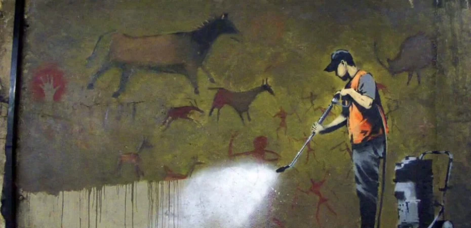
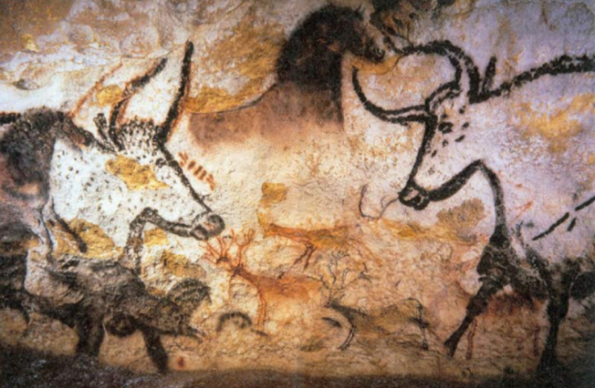
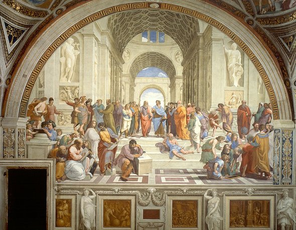
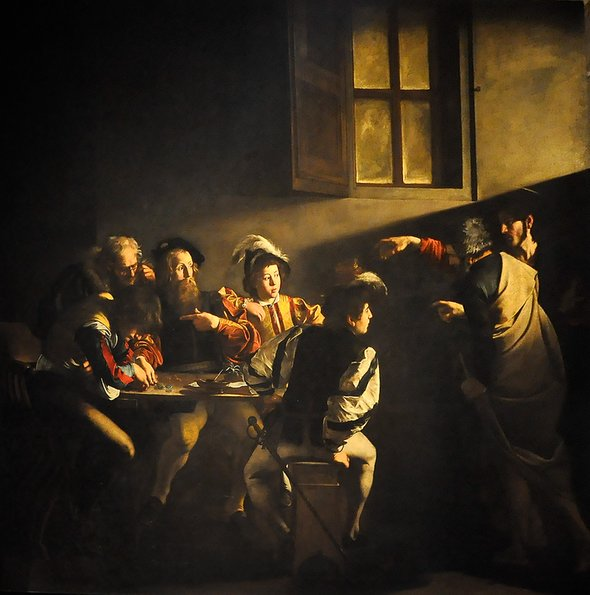
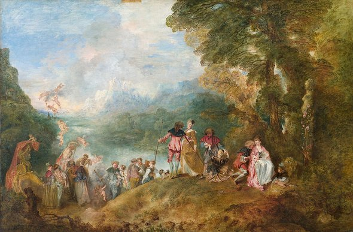
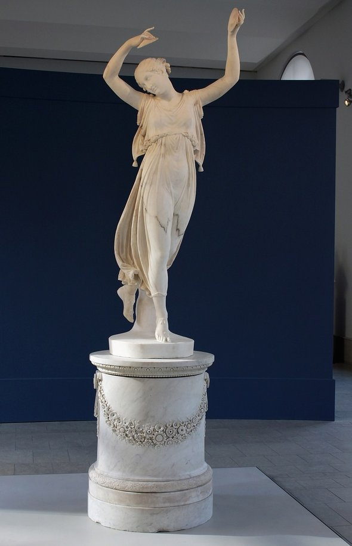

Краткая история искусства
История искусства насчитывает десятки тысяч лет - люди самых древних цивилизаций использовали доступные им методы для изображения значимых для них объектов. С ранних времен и до наших дней появлялось множество художественных течений, каждое из которых имело черты, отражающие политические и социальные особенности того периода, когда они возникали.
Выдающиеся произведения изобразительного искусства от эпохи Возрождения до модернизма, несомненно, оставили свой след в истории. Многие современные художники используют исторические отсылки к искусству прошлого в своих произведениях, поэтому для понимания многих картин решающее значение имеет знание исторического контекста и значения каждого периода для истории искусства в целом. Ниже представлена хронология художественных направлений, их характеристики и выдающиеся представители каждого периода в истории западного искусства.
Доисторическое искусство (~ 40 000–4 000 до н.э.)
Истоки истории искусства восходят к доисторической эпохе, задолго до появления письменности. Самые ранние артефакты относят к эпохе палеолита или древнего каменного века — это наскальные рисунки, гравюры, живописные изображения, скульптуры и каменные композиции.
Искусство этого периода основывалось на использовании натуральных красителей и резьбе по камню для создания изображений предметов, животных и ритуалов, которые были крайне важны в жизни древних цивилизаций. Одним из самых известных примеров доисторического искусства являются наскальные рисунки эпохи палеолита, обнаруженные в пещерах Ласко во Франции в 1940 году. Их возраст превосходит 20 000 лет, и на них изображены крупные животные и растительность этой местности.
Древнее искусство создавалось развитыми цивилизациями (которыми в данном случае считаются цивилизации с устоявшейся письменностью), включавшими Месопотамию, Египет, Грецию и страны Америки.
Средние века часто называют темными веками из-за экономического и культурного упадка после падения Римской империи в 476 году нашей эры. Большая часть произведений искусства, созданных в первые годы этого периода, отражает мрак этого времени и отличается гротескными образами и суровыми пейзажами. В средневековом искусстве доминирует церковная тематика; по прошествии первого тысячелетия стали появляться церкви, украшенные библейскими сюжетами и сценами классической мифологии.
В этот период в мире появляются и достигают расцвета иллюминированные рукописи (украшенные миниатюрами и орнаментами) и стиль готической архитектуры. Яркие примеры средневекового искусства включают катакомбы в Риме, собор Святой Софии в Стамбуле, Евангелие Линдисфарна, один из самых известных примеров иллюминированной рукописи, и конечно, собор Парижской Богоматери - выдающийся образец готической архитектуры.
Искусство эпохи Возрождения (1400-1600)
Этот стиль живописи, скульптуры и декоративного искусства характеризовался акцентом на природе и индивидуализме, идее о независимом и самостоятельном человеке. Хотя эти гуманистические идеалы присутствовали и в позднем средневековье, но расцвета они достигли в XV-XVI веках, параллельно с социальными и экономическими изменениями, такими как секуляризация.
Маньеризм (1527-1580)
Художники-маньеристы исходили из идеалов Микеланджело, Рафаэля и других художников позднего Возрождения, но их внимание к стилю и технике перевешивало смысл изображаемого объекта. Часто фигуры имели изящные вытянутые конечности, маленькие головы, стилизованные черты лица и преувеличенные детали. Это привело к созданию более сложных стилизованных композиций, вместо того, чтобы полагаться на классические идеалы гармоничной композиции и линейной перспективы, используемые их предшественниками эпохи Возрождения.
Некоторые из самых известных художников-маньеристов:
- Джорджо Вазари
- Франческо Сальвиати
- Доменико Беккафуми
- Бронзино, который считался самым важным художником-маньеристом во Флоренции
Барокко (1600-1750)
Периоду барокко, следовавшему за маньеризмом, было свойственно преувеличенное изящество в живописи и архитектуре. Он отличался величием и богатством, интересом к развитию человеческого интеллекта и знаний и глобальным открытиям. Произведения художников барокко были стилистически сложными, неоднозначными.
Рококо (1699-1780)
Стиль зародился в Париже и охватывал декоративное искусство, живопись, архитектуру и скульптуру. Эстетика Рококо предполагала более мягкую декоративную манеру изображения по сравнению с изобилием барокко. Рококо отличается легкостью и элегантностью, с акцентом на использование естественных форм, асимметричный дизайн и нежные цвета.
Неоклассицизм (1750-1850)
Как следует из названия, неоклассический стиль опирался на элементы античной классики. Руины древних цивилизаций в Афинах и Неаполе, обнаруженные во время археологических раскопок, разожгли страсть ко всему прошлому, и художники стремились воссоздать великие произведения древнего искусства. Это привело к возобновлению интереса к классическим идеалам гармонии, простоты и пропорции.
